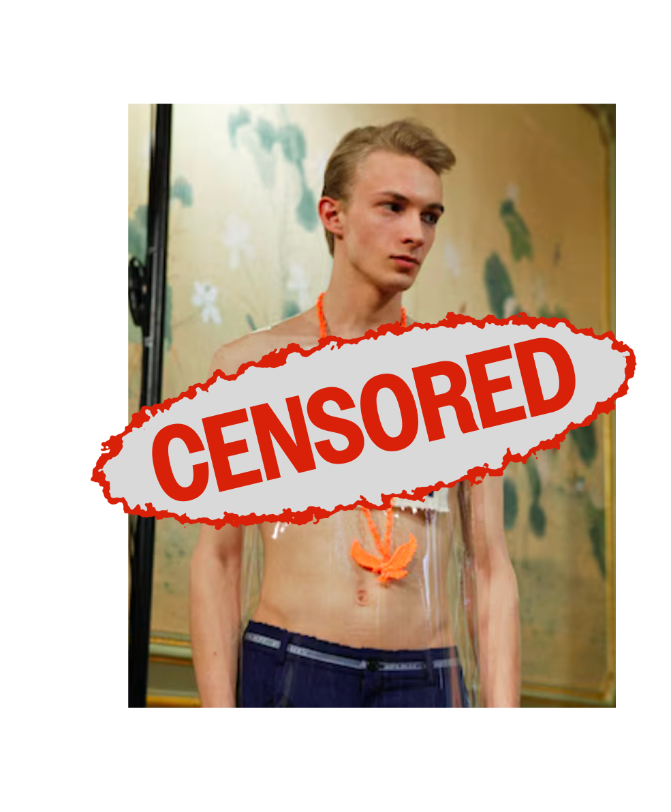
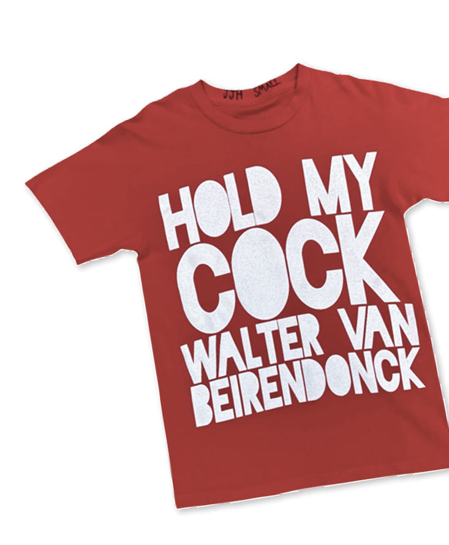

De rebel achter W<

Walter Van Beirendonck gebruikt mode niet als eindpunt, maar als reactie. Niet om trends te volgen, maar om het systeem aan te vallen.
Hij heeft zich nooit comfortabel genesteld binnen het modesysteem. Voor Walter is mode geen carrièrepad, maar een middel om te reageren op wat wringt. Kleding wordt een statement, geen product.
Met zijn label W< confronteert hij de conventies van de mode-industrie. Elke collectie, performance en elk kledingstuk is geladen met intentie en bevraagt macht, identiteit, consumptie en controle.
Waar traditionele mode harmonie nastreeft, kiest W< voor verstoring en zichtbaarheid.
“In fashion, you need to challenge what is comfortable and what is expected.”
Het lichaam is geen passieve drager, maar een actief strijdveld.
Houding, spanning en expressie zijn even belangrijk als het kledingstuk zelf. De collecties sussen niet, maar dagen uit en confronteren. Door het systeem te overdrijven, legt Walter het genadeloos bloot.
Mode wordt zo een wapen.
Een medium van kritiek dat van drager en kijker vraagt om positie in te nemen. W< toont dat kleding meer is dan stof: het kan een stem zijn, een houding, een provocatie.
Materiaal dat schreeuwt
In het werk van Walter Van Beirendonck zijn materialen nooit neutraal. Latex, PVC en vinyl verleiden niet, ze verstoren.
Ze glanzen hard, kleven aan de huid en reageren zichtbaar op beweging en warmte. Deze materialen maken het lichaam voelbaar, zichtbaar en soms ongemakkelijk.
“Niet om te verbergen, maar om bloot te leggen.”
Waar luxe mode traditioneel inzet op zachtheid, verfijning en comfort, kiest Walter bewust voor het tegenovergestelde. Zijn materialen worden geassocieerd met industrie, bescherming en fetisjcultuur. Ze weigeren onzichtbaar te worden en trekken spanning naar de oppervlakte.
Klik op een materiaal en kom er meer over te weten!
Dat ongemak is geen bijwerking, maar de kern van het werk.
Binnen Walter’s bredere praktijk functioneren deze materialen als een vorm van verzet. Ze doorbreken de grens tussen edel en banaal, tussen mode en industrie, en verwijzen naar een wereld waarin lichamen steeds vaker botsen met systemen die hen vormgeven en beperken.

Deze iconische stukken materialen maken deel uit van de collectie van MoMu, waar bezoekers ze van dichtbij kunnen bekijken en aanvoelen.
Slogans die storen

censuur-meter
VERLAAG DE CENSUUR OM TE ONTDEKKEN WAT VERBORGEN WORDT
Woorden worden bij Walter nooit stil gehouden.

* Item te bekijken in MoMu
Ze verschijnen groot, direct en onvermijdelijk op kledingstukken. De drager wordt zo letterlijk een drager van boodschap.
Zijn slogans lenen hun visuele taal van waarschuwingen, veiligheidslabels en straatprotest. Ze zijn functioneel, niet decoratief. Door tekst centraal te plaatsen waar mode traditioneel focust op vorm, verschuift Walter de rol van kleding: het wordt een communicatiesysteem dat door de publieke ruimte beweegt.
* Item te bekijken in MoMu
Mode wordt een medium dat spreekt, waarschuwt en confronteert.
De boodschappen zijn helder en laten weinig ruimte voor vrijblijvendheid. Ze tonen dat kleding altijd communiceert, ook wanneer ze zwijgt.
Tegelijk toont Walter hoe expressie begrensd wordt. Niet elke boodschap krijgt volledige zichtbaarheid. Censuur, fragmentatie en bedekking maken deel uit van het beeld en verwijzen naar bredere systemen van controle en beperking.
Massaproductie ontmaskerd
Mode is niet neutraal: het systeem draait op herhaling.
Trends volgen elkaar op, worden gekopieerd, uitgehold en opnieuw gelanceerd. In dat proces verdwijnt betekenis.
Walter Van Beirendonck legt dit mechanisme bloot door het te overdrijven. Herhaling en accumulatie worden zichtbaar gemaakt, waardoor duidelijk wordt hoe overproductie leidt tot leegte. Hoe meer objecten verschijnen, hoe minder ze nog zeggen. Identiteit vervaagt tot uitwisselbaarheid.
Druk meermaals op de knop, zo ervaar je het effect van massaproductie.
Wat ooit expressief was, verandert in formule.
Deze kritiek gaat verder dan mode alleen. Overconsumptie beïnvloedt hoe we omgaan met beelden, objecten en ideeën. De constante drang naar vernieuwing creëert oppervlakkigheid. In plaats van ontsnapping te bieden, confronteert Walter de kijker met deze realiteit.
Naarmate herhaling toeneemt, verdwijnt rijkdom. Kleur vervaagt. Tekst verdwijnt. Wat overblijft is volume zonder inhoud.